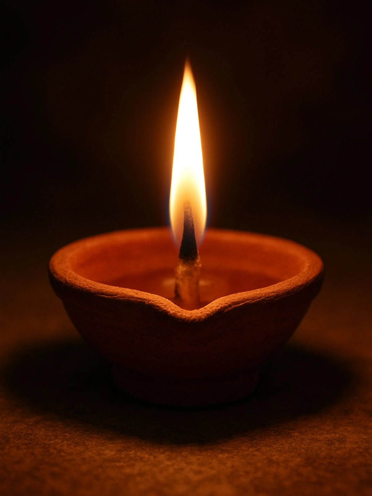
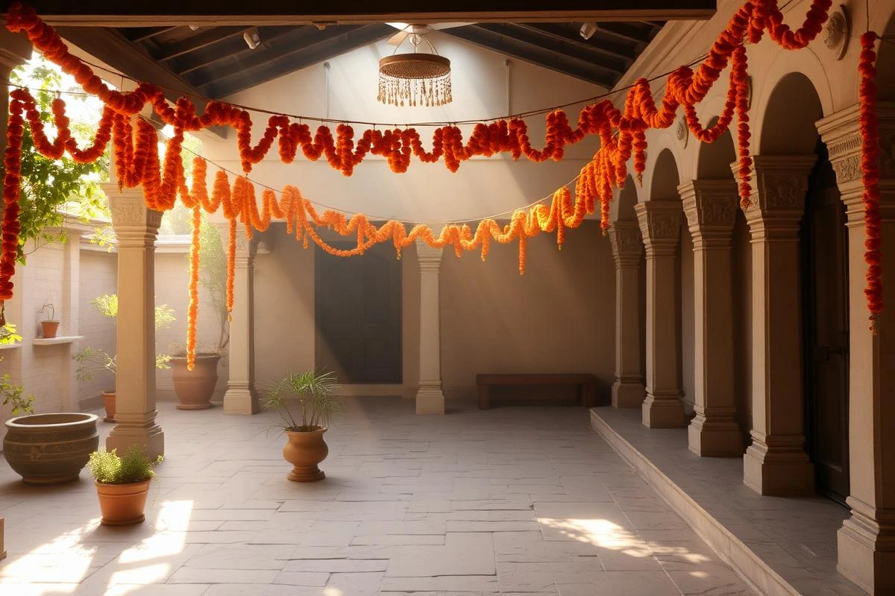

HINDU FUNERAL & SHRADDHA GUIDANCE . DELHI NCR . 24/7 AVAILABLE
Antim Sanskar has thirteen days of rites, each with its own timing, materials, and meaning. Antimtithi arranges every one of them — the pandit, the crematorium slot, the samagri, the paperwork — and stays on the line until the Tehravin is done, so your family can focus on each other instead of logistics.

The final cremation rites at the holy ghats, ensuring the physical body returns to the five elements with Vedic chants.
Offering of rice balls to the departed soul, facilitating the transition from Preta to Pitru through sacred rituals.
The conclusion of the mourning period with a community feast and prayers for the lasting peace of the soul.

What we take off your hands
Every service can be booked on its own, or together as a full antim sanskar package. See all services →
A dignified, climate-controlled vehicle, dispatched anywhere in Delhi NCR, day or night.
A Vedic priest for the antyeshti and every rite through the Tehravin.
Every item the rites call for, assembled in advance.
As a person puts on new garments, giving up old ones, the soul similarly accepts new material bodies, giving up the old and useless ones.- Bhagavad Gita 2.22
Coordinators on call across Delhi NCR
Average dispatch time for the hearse
Antyeshti to Tehravin, one point of contact